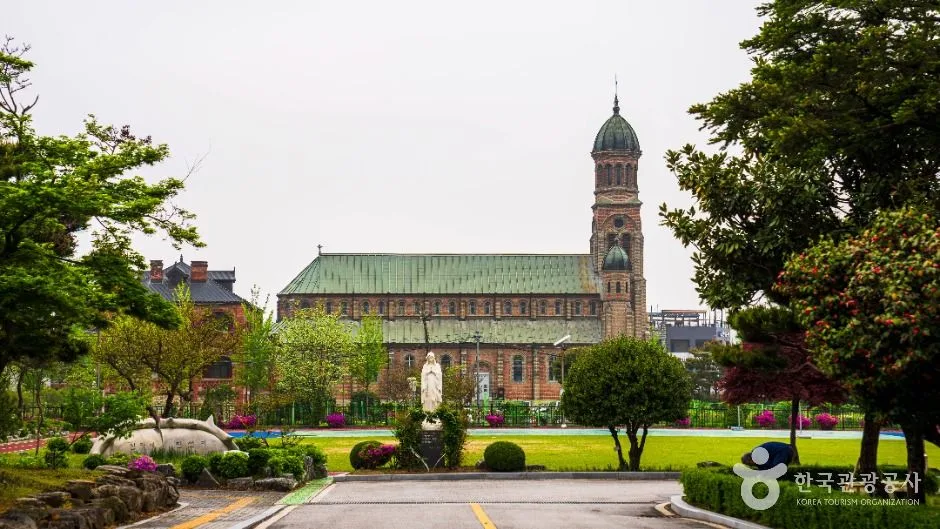
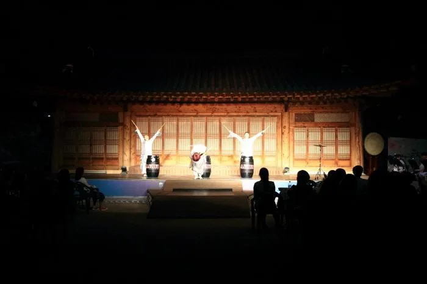
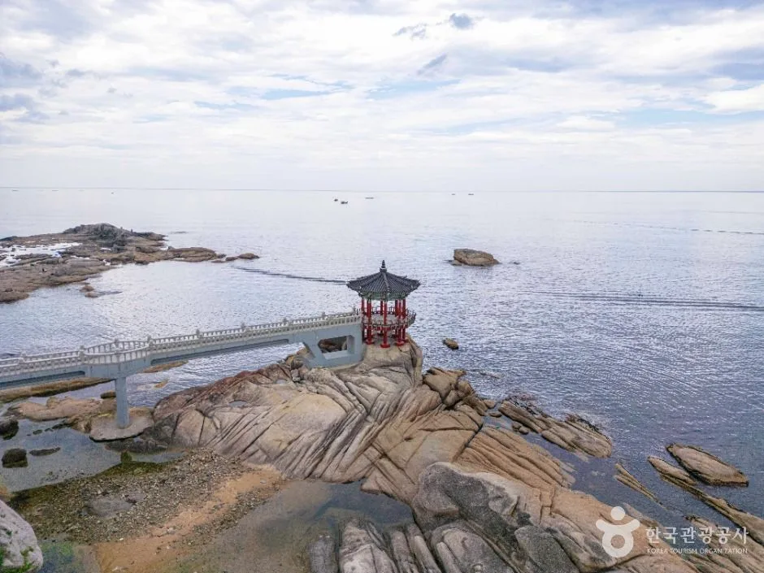
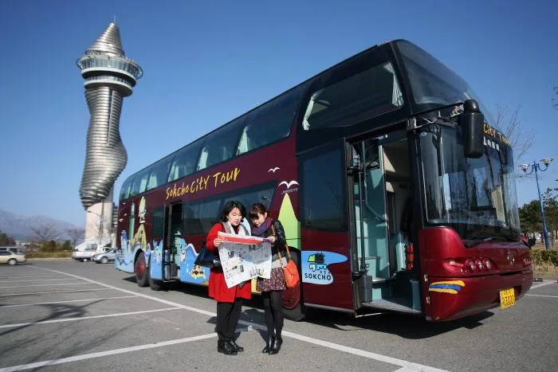
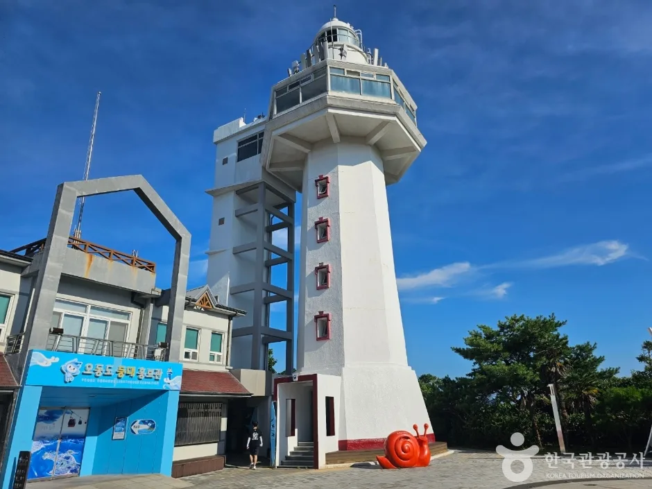
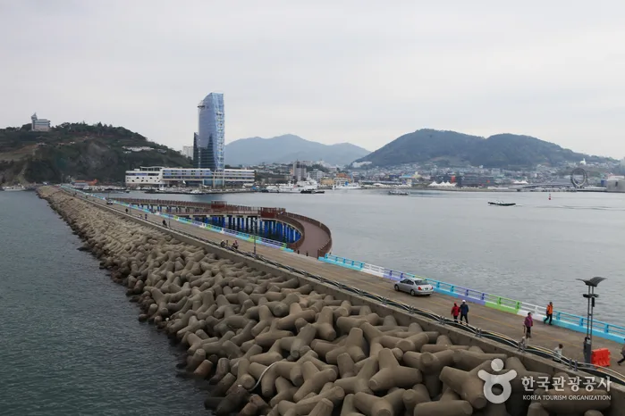
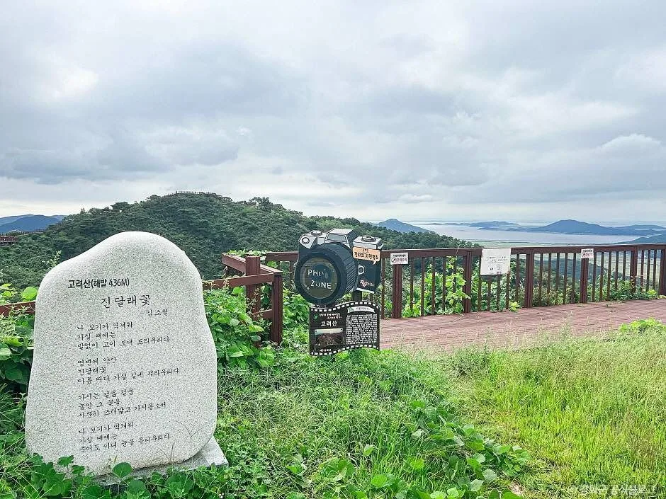
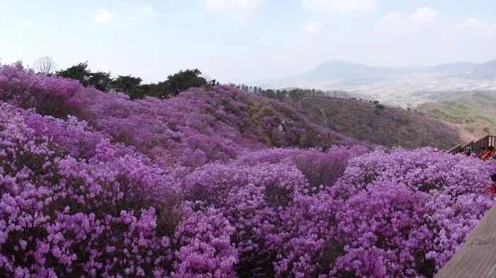

▲ 전주 한옥마을. 700여 채 한옥이 모인 국내 최대 도심 한옥군이다
"가볼만한곳"으로 검색하면 나오는 정보는 대체로 비슷합니다. 무엇을 보고 무엇을 먹을지가 중심입니다.
그런데 차를 가져가는 순간 변수가 하나 더 붙습니다. 그 볼거리에 차로 얼마나 가까이 갈 수 있느냐입니다. 이 변수는 여행지의 지형과 형성 과정에 따라 결정되고, 대체로 바뀌지 않습니다.
1. 전주 — 골목에 들어가면 진다
전주 한옥마을은 풍남동 일대에 한옥 700여 채가 모인 구역입니다. 1910년부터 조성되기 시작한 전국 유일의 도심 한옥군이고, 경기전과 오목대, 향교 같은 문화재가 그 안에 흩어져 있습니다.

▲ 전주 전동성당. 입장료는 무료이며 09:00~18:00에 개방한다 ⓒ 대한민국 구석구석(한국관광공사)
이 구조가 주차 난도를 결정합니다. 관광지로 만든 마을이 아니라 사람이 살던 동네에 관광이 들어온 형태라, 도로가 관광객 차량을 받도록 설계되지 않았습니다. 골목으로 들어가면 회차가 어렵고, 주민 통행에도 지장을 줍니다.

▲ 한옥마을 야간 공연. 저녁 시간대에 체류가 길어지면서 출차도 몰린다 ⓒ 대한민국 구석구석(한국관광공사)
경기전은 성인 3,000원, 청소년 2,000원, 어린이 1,000원의 입장료가 있고 전동성당은 무료입니다. 마을 산책 코스는 경기전에서 전동성당, 전주향교를 거쳐 전주천으로 이어지는데 전부 도보 구간입니다.
📍 전주에서 통하는 방식
한옥마을 외곽 공영주차장에 세우고 걸어 들어가는 것이 사실상 유일한 답입니다. 마을 자체가 걸어서 도는 크기이므로 차를 안쪽으로 밀어 넣을 이유가 없습니다. 야간 공연이나 식사로 체류가 길어질 예정이라면 시간당 요금이 아닌 일 주차 요금이 적용되는 주차장을 찾는 편이 유리합니다.
2. 속초·여수 — 도로가 먼저 막힌다
해안 도심은 구조가 다릅니다. 바다를 등지고 도시가 형성돼 있어, 도로망이 해안선을 따라 길게 늘어섭니다. 우회로가 적다는 뜻입니다.

▲ 속초 영금정. 파도가 바위에 부딪히는 소리가 거문고 같다 하여 붙은 이름이다 ⓒ 대한민국 구석구석(한국관광공사)
속초가 전형적입니다. 영금정은 속초등대 아래 바닷가에 넓은 바위가 깔린 곳으로, 파도가 바위에 부딪히는 소리가 거문고 소리 같다고 해서 이름이 붙었습니다. 이런 지점들이 해안도로를 따라 일렬로 놓여 있습니다.

▲ 속초 시티투어 버스. 성수기에는 차를 두고 이용하는 편이 빠를 수 있다 ⓒ 대한민국 구석구석(한국관광공사)
일렬 배치의 문제는 우회가 안 된다는 점입니다. 한 지점이 막히면 전체가 밀립니다. 성수기 주말에는 시티투어 버스를 이용하거나, 숙소에 차를 두고 도보·대중교통으로 움직이는 편이 오히려 빠른 경우가 생깁니다.

▲ 여수 오동도 등대. 2002년 27m 높이로 개축되며 전망용 엘리베이터가 설치됐다 ⓒ 대한민국 구석구석(한국관광공사)
여수도 같은 구조입니다. 오동도는 한려해상 국립공원의 명물이고, 등탑은 2002년에 높이 27m의 8각형으로 개축되면서 외부에 전망용 엘리베이터가 설치됐습니다. 문제는 오동도 진입로와 도심 도로가 하나로 이어진다는 점입니다.

▲ 여수 해안. 도심과 해안 관광지가 같은 도로를 공유한다 ⓒ 대한민국 구석구석(한국관광공사)
3. 강화 — 주차장이 곧 출발점이다
산악형은 계산 자체가 다릅니다. 강화 고려산은 해발 436m이고 옛 이름은 오련산입니다. 도심 관광지와 달리 "주차하고 걸어서 5분"이 아니라, 주차한 지점이 등산 시작점이 됩니다.

▲ 강화 고려산 정상부. 어느 주차장을 선택하느냐가 등산 난도를 결정한다 ⓒ 대한민국 구석구석(한국관광공사)
따라서 주차장 선택이 곧 코스 선택입니다. 어느 들머리에 차를 두느냐에 따라 올라가는 거리와 경사가 달라지고, 하산 지점이 다르면 차를 가지러 되돌아가야 합니다. 원점 회귀 코스인지 먼저 확인해야 합니다.

▲ 고려산 진달래 군락. 개화기에는 주차 수요가 한 시기에 집중된다 ⓒ 대한민국 구석구석(한국관광공사)
진달래 개화기에는 수요가 한 주에 몰립니다. 산 전체가 진분홍으로 물드는 시기가 짧아, 그 기간에 방문이 집중됩니다. 이때는 들머리 주차장이 이른 오전에 마감되는 경우가 많습니다.
4. 유형별로 정리하면
네 곳을 유형으로 나누면 대응이 명확해집니다. 각각 막히는 지점이 다르기 때문에, 같은 대비책을 쓰면 안 됩니다.
| 유형 | 해당 | 병목 | 대응 |
|---|---|---|---|
| 도심 한옥형 | 전주 | 골목 진입 불가 | 외곽 주차 + 전면 도보 |
| 해안 도심형 | 속초 · 여수 | 도로 용량(우회 불가) | 숙소 거점 + 대중교통 |
| 산악형 | 강화 고려산 | 들머리 주차장 조기 마감 | 이른 오전 · 원점 회귀 확인 |
공통점도 하나 있습니다. 세 유형 모두 차를 목적지에 가까이 붙일수록 손해라는 점입니다. 도심형은 물리적으로 못 들어가고, 해안형은 들어가는 길이 막히고, 산악형은 애초에 걸어야 합니다.
5. 여행지를 고르는 기준 하나를 추가한다면
일정을 짜기 전에 확인할 것은 두 가지입니다. 첫째, 목적지 반경 500m 안에 주차장이 있는가. 둘째, 그 주차장에서 목적지까지 걸어서 몇 분인가.
이 두 가지가 확인되면 나머지는 부수적입니다. 반대로 이걸 확인하지 않으면, 어떤 명소를 넣어도 하루의 상당 부분이 자리 찾기에 쓰입니다.
정리하면 이렇습니다. "가볼만한곳"은 어디에나 있습니다. 하루의 만족도를 실제로 가르는 것은 그곳까지 차로 어떻게 접근하느냐입니다. 목적지를 정한 다음에 주차를 고민하지 말고, 주차 조건을 보고 목적지 순서를 정하십시오.